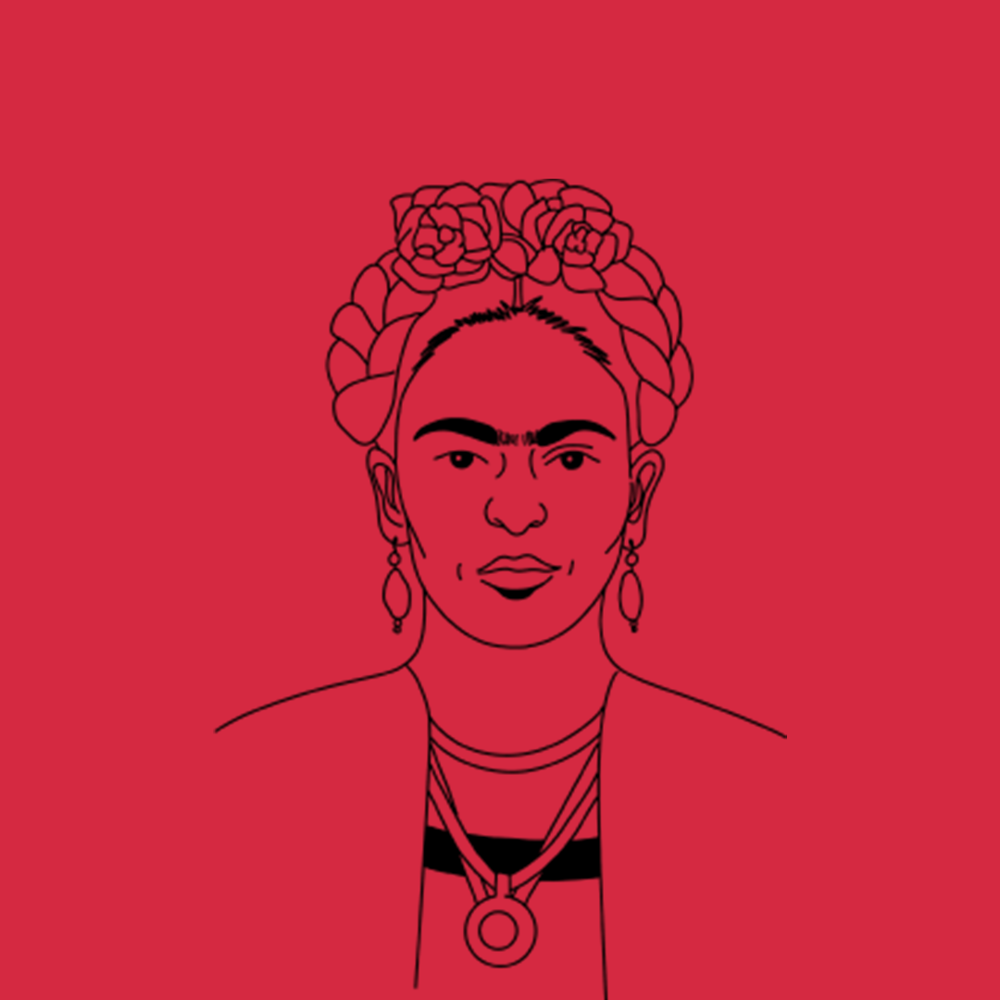

FRIDA KAHLO
frida khalo
L’icona dell’autodeterminazione femminile
Nel pennello di una Rivoluzionaria
Frida Kahlo, la rinomata pittrice messicana, è spesso celebrata come un'icona del femminismo e dell'autodeterminazione. Nata nel 1907, la sua vita e il suo lavoro artistico si sono intrecciati con le lotte femminili e hanno sfidato le norme di genere dell'epoca.
Kahlo ha trasformato la sua sofferenza in un'opportunità di esplorare le esperienze delle donne attraverso la sua arte. I suoi autoritratti iconici, spesso caratterizzati da dolori fisici e sconvolgimenti emotivi, esprimono una profonda auto-riflessione s ulla sua identità di genere e sulla sua esperienza di vita. Questi autoritratti sono diventati una forma di narrazione visiva delle sfide che molte donne affrontano.
La sessualità, la maternità e l'aborto erano tra i temi tabù che Kahlo ha affrontato apertamente nella sua arte. Questi soggetti complessi e sensibili sono stati presentati senza paura, fornendo una voce per le esperienze femminili spesso negate o silenziate. La sua relazione con Diego Rivera ha anch'essa sfidato le aspettative di genere. Kahlo e Rivera erano entrambi artisti di grande talento, ma la loro relazione turbolenta e passionale ha mostrato come l'indipendenza e l'ambizione delle donne possano coesistere in relazioni complesse.